![Long ago, in a village of green rice fields, the sky hangs very low, like a thick bumpy blue ceiling just above everyone's heads. A woman in a coral blouse and a purple striped skirt, with a comb in her hair and a bead necklace, lifts her long wooden pestle over her rice mortar, and the top of the pestle bonks the sky with a yellow burst. A little cloud squashed under the sky beside her makes an 'oof' face, another peeks out on the left by a bent coconut palm, a bamboo house on stilts stands on the right, and a white hen watches.](art/sky-01.svg)
A folk tale from the Philippines
Why the Sky Is High
"Story, story — are your ears open?" Kai: "Open!"
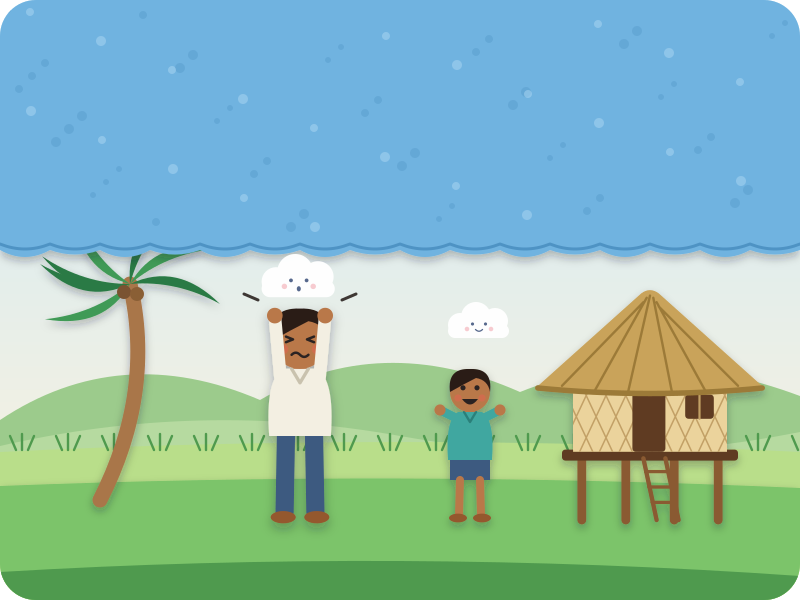
Long, long ago, the sky was low. So low you could touch it!
The clouds bumped into people's heads. Bump! "Oof!" Kai pats the top of his head: "Oof!"
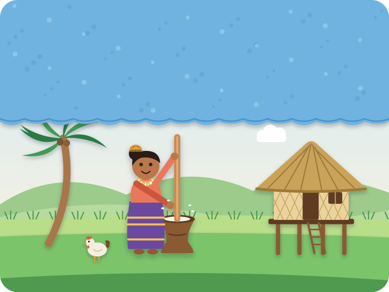
In the village lived a woman who pounded rice every day, with a wooden mortar and a long, long pestle.
"Pound, pound, pound the rice — thump!" Kai pats his knees: pound, pound, pound… and claps: thump!
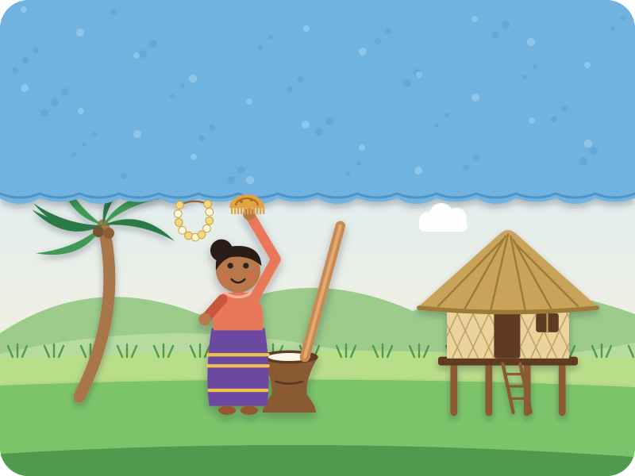
Her comb and her necklace kept getting in the way. So she took them off and hung them up — on the sky!
The low sky was all bumpy, like a rock, so they hooked on nicely.
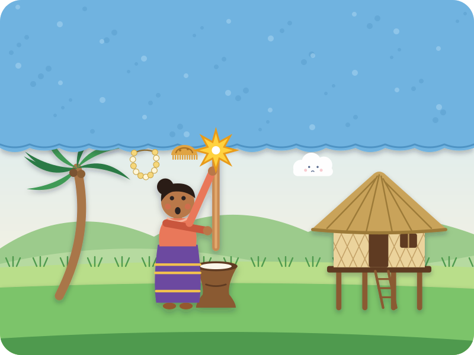
She lifted her pestle… "Pound, pound, pound the rice —"
BONK! The pestle hit the sky! Kai: "BONK!"
"Oof!" said a little cloud.
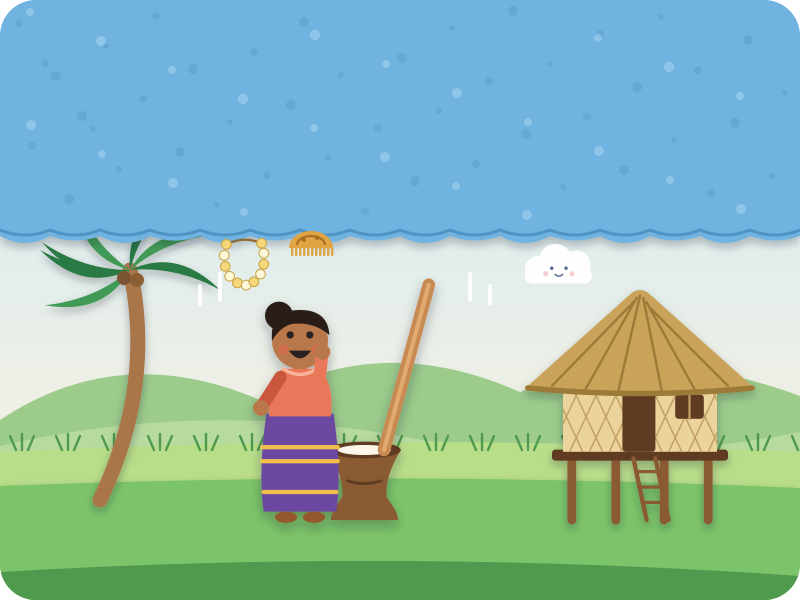
"Excuse me, Sky," she said nicely. "Could you please go up a little?"
The sky creaked up… just a teeny, tiny bit. Kai shows a teeny bit with two fingers
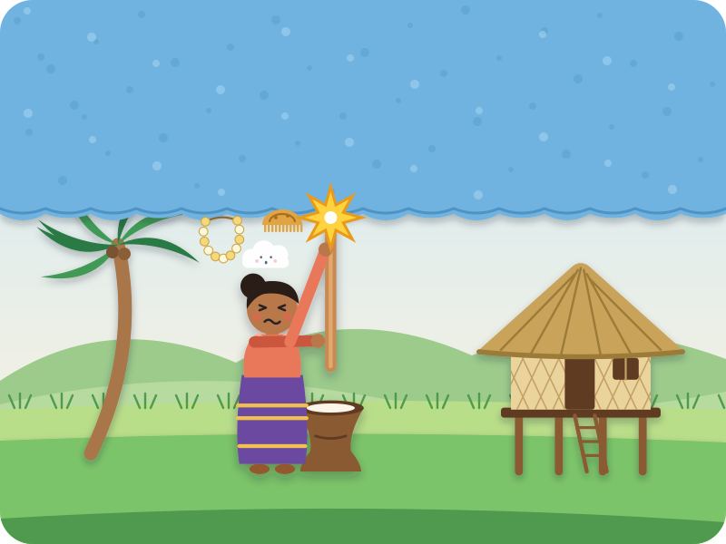
She tried again. "Pound, pound, pound the rice —"
BONK! Kai: "BONK!" And a cloud bumped her head, too. "Oof!"
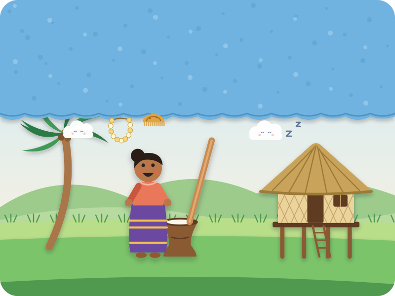
"Sky!" she called, a bit louder. "Higher, please!"
But the clouds were snoozing, and the sky did not move at all. Kai snores
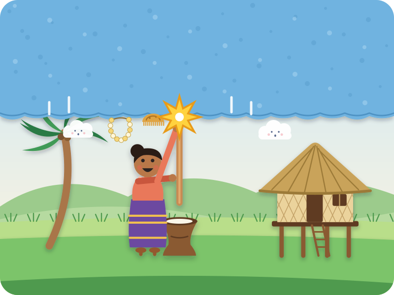
So she stood up on her tiptoes. She held her pestle with both hands. "One… two… three…"
PUSH! Kai pushes both hands up high
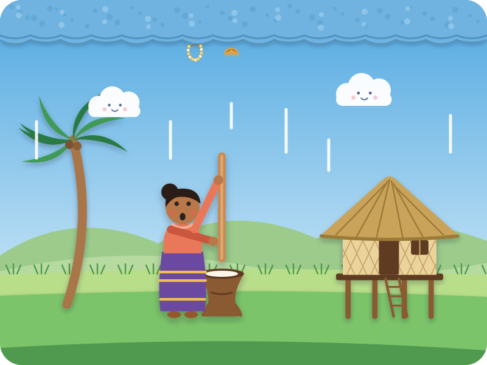
WHOOSH! Kai: "Whoosh!" Up went the sky — up, up, up, higher than the trees!
And up went her comb and her necklace, too. "Oh!"
Now everybody could stand up tall and s-t-r-e-t-c-h. Kai stretches up tall
And she pounded her rice with no bonk at all. "Pound, pound, pound the rice — thump!" Kai pats his knees
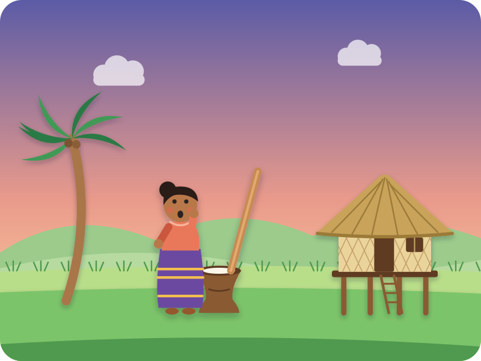
That evening, she looked up. "Where are my comb and my necklace?"
They were far, far away, way up in the high sky.
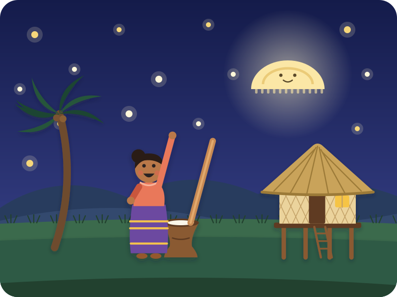
Then night came… and look! Her comb was shining up there — it was the moon! And her beads twinkled all around — they were the stars! Kai points to the moon
And that is why the sky is high.
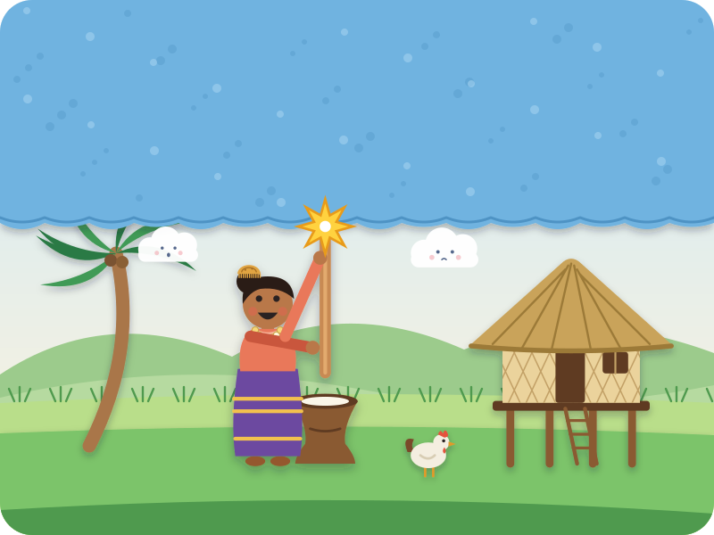
The End
"Snip, snap, snout — this tale's told out."
Swipe back to read it again
Driving? Tell it without the page · six beats
The picture book is for home, bedtime, or a passenger. In the car, tell it from memory — bold is Kai's part.
- Long ago the sky was so low you could touch it, and the clouds bumped people's heads — "Oof!"
- A woman pounded rice every day with a long, long pestle — "Pound, pound, pound the rice — thump!" (pat knees, clap)
- She hung her comb and her necklace on the bumpy sky, lifted her pestle… BONK!
- "Sky, please go up a little?" It went up a teeny bit — but still BONK! And the clouds just snoozed.
- On tiptoes, both hands: "One, two, three…" PUSH! — WHOOSH! Up flew the sky, and her comb and necklace went with it.
- Now everyone could stand tall. And at night her comb shone as the moon and her beads as the stars — point to the moon!
After the story · car-friendly wondering
"If the sky were really low, what would bump your head?"
"She asked nicely first. What else could she have tried?"
"Next time we see a half-moon, does it look a bit like a comb?"
Where this story comes from
Stories about a time when the sky was low, until someone pounding rice pushed it up, are told by more than one people in the Philippines, and the versions differ. Our main source is a tale of the Bukidnon people of Mindanao, "How the Moon and the Stars Came to Be", in Mabel Cook Cole's Philippine Folk Tales (1916). In Cole's telling, a spinster going out to pound rice took off her beads and her comb and hung them on the sky, which was close to the ground then and looked like coral rock. Her pestle kept striking the sky, and when she raised it very high and struck hard, the sky rose far up, carrying her ornaments with it — the comb became the moon and the beads became the stars. The polite asking comes from a second, separate tale: in "Why the Sky Went Up", from the Bagobo people (also of Mindanao) and recorded by Laura Watson Benedict in "Bagobo Myths" (Journal of American Folk-Lore, 1913), a woman called Tuglibung, who has to kneel to pound her rice, tells the sky to go higher, and it starts to move up. You may hear that other groups elsewhere in the Philippines tell the story too; we haven't checked those versions ourselves, so we don't name them here. This retelling is our own, for a 4-year-old: we joined the asking and the push into one story and left the woman unnamed. The clouds bumping heads, the "BONK", the snoozing clouds, the man and the little boy, and the "Pound, pound, pound the rice" refrain are our picture-book additions, not details from either old tale.